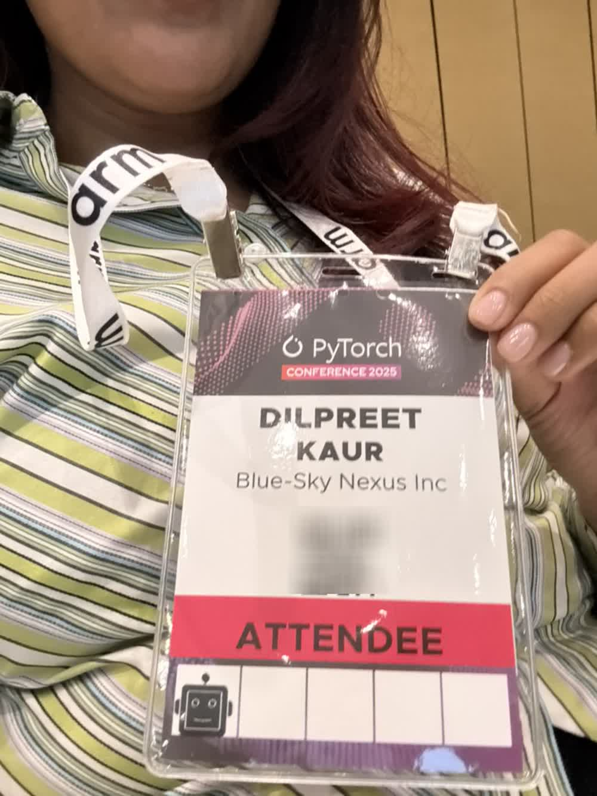
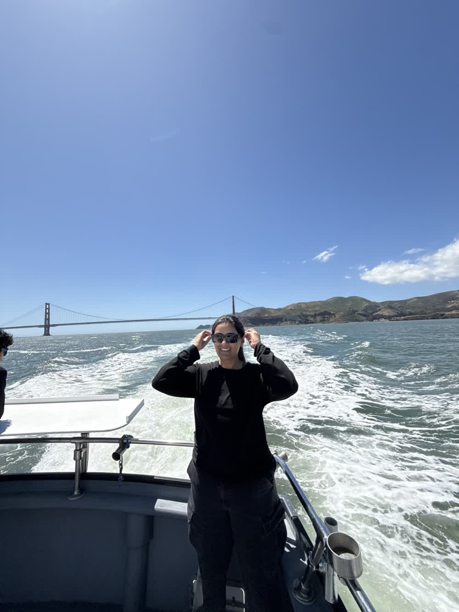
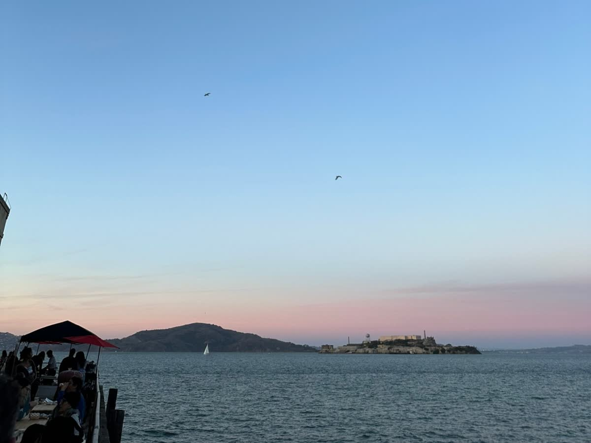

Selected work
Writing
Background
Now
Data & backend engineer at viaNexus. I own data pipelines and the APIs on top of them, build the MCP connectors that let AI assistants pull live market data, and put together the dashboards and demos that show people how to use any of it. Teaching taught me to make complex things click, which is how I ended up working on product and marketing too.
Before
M.S. Astronomy & Astrophysics, San Francisco State. B.S. Physics, CSU Stanislaus. Physics lab instructor at the University of San Francisco, and three years of graduate research modeling synthetic stellar spectra and wrangling survey-scale astronomical datasets.


